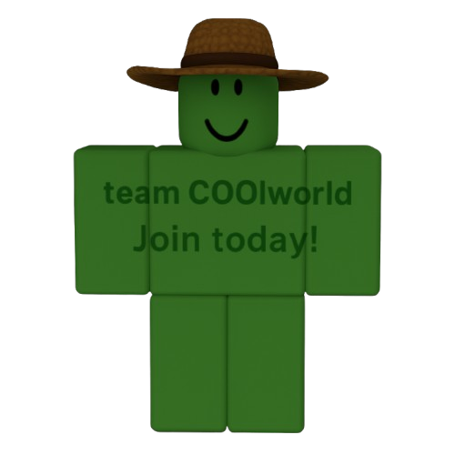

Vida na Cidade
A cidade pulsa com movimento, tecnologia e serviços. Mas por trás de tudo isso, há o campo fornecendo alimentos, cultura e energia.
- Alimentos frescos das fazendas
- Transporte e logística rural
- Feiras e produtos artesanais
Vida no Campo
O campo é o berço da produção, da natureza e da tranquilidade. Mas também se beneficia do conhecimento, da educação e da tecnologia urbana.
- Educação a distância
- Tratores inteligentes e conectividade
- Inovações para a agricultura

Quiz: Campo e Cidade
Teste seus conhecimentos sobre essa importante conexão!
Converse com a IA Viva
Simule uma conversa com a IA do site. Escolha uma pergunta:
O campo é a base da produção de alimentos, cultura e tradições. Ele se conecta à cidade através da logística e da tecnologia.
A cidade contribui com tecnologia, educação e acesso a mercados que valorizam os produtos do campo.
Você pode valorizar produtos locais, participar de feiras e apoiar iniciativas de educação e conectividade no meio rural.